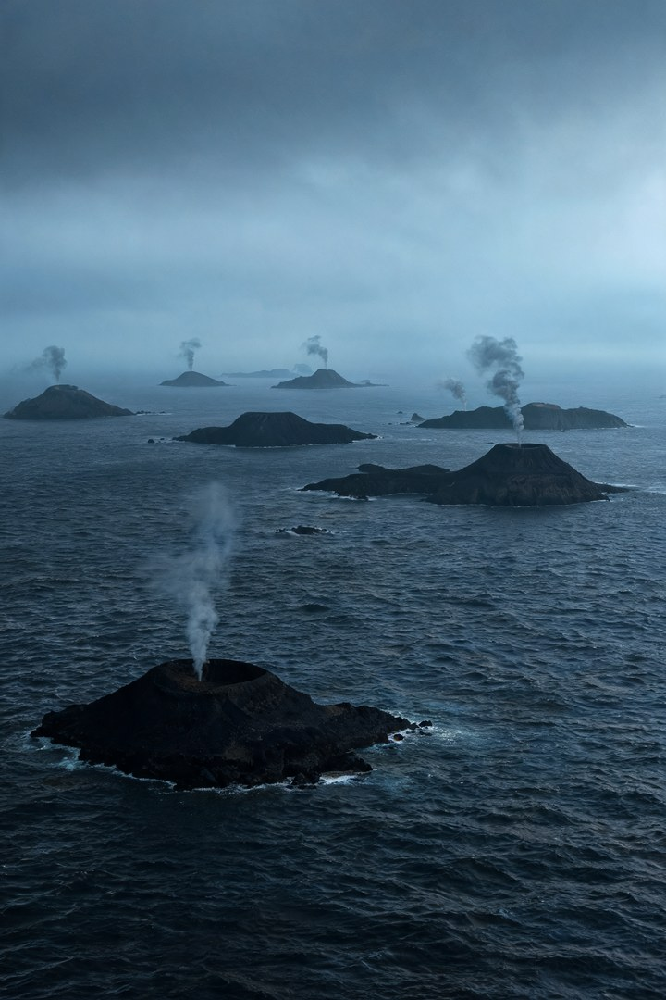
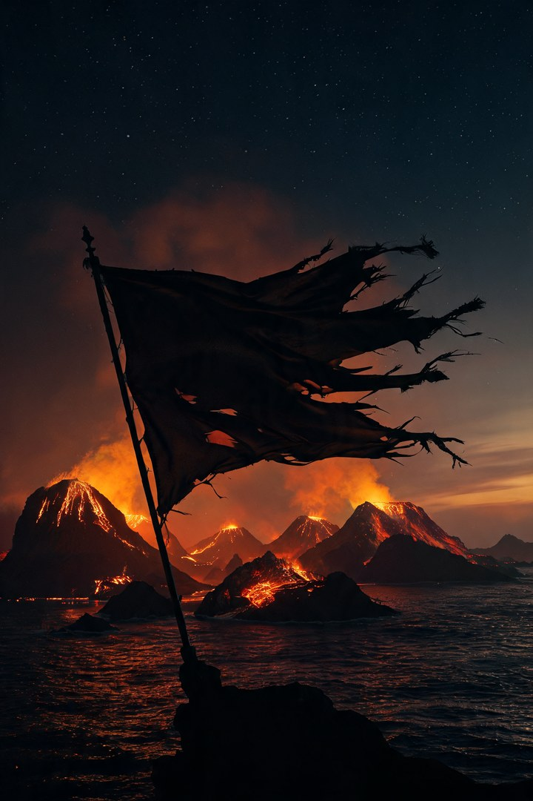
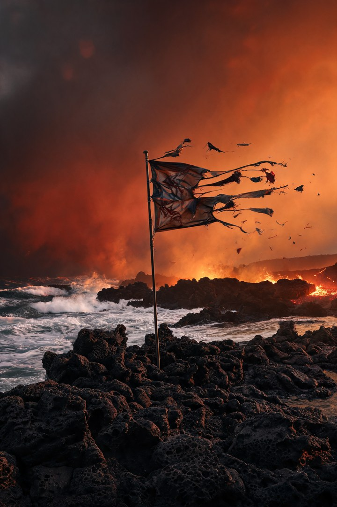

Intro · Ori 气质 · ~0:12
空灵 pad、碎钢琴。几乎无鼓。
Drop-in · 进床
热闹是别人的船。我有光就亮。

Verse · 列举Ⅰ
反传统叙事的人，一一点名。
Pre · 火山
海水涌进来又退出去。

Chorus · Hook
旗撕成条。我没拔，也没跪。
Verse · 列举Ⅱ
不靠岸，也不等人来捞。
Pre · 呼吸口
火山口不是伤口，是呼吸口。

Chorus · Hook
反叛不是姿势。
Bridge · Rebel Path
反着写自己人生的人。
Final / Outro
不敬酒。敬你还在烧。